Introduction
IoT熱が高まってついに電子工作を始めました。
スイッチサイエンス、お世話になります。 で、何がしたいかというと、BLEビーコンを作ってみたいんですよ。 いやネット上でBLE Nanoキットを使ってサンプルは転がっているんですが、電子工作スキルなるものを習得できれば、と思います。 子供の頃はプラモデル作るのは好きでした。大丈夫でしょう。
Instructions
基本的には、JellyWare様の下記のページをなぞるだけです。

違うのは、ボリュームがない点です。 つまり、電池、コイン電池ホルダ、ジャンパワイヤ、BLE Nano v2、ブレッドボードだけを使います。 ひたすらパケットを送信するだけのビーコンです。 で、軽く記事を読むと、
- mbed
- ARM社のプロトタイピング用ワンボードマイコン用のプログラミング環境
が必要とのこと。Visual Studioで出来ないの?と温いことを思いますが、郷に入っては郷に従うの精神で行きます。
mbedのアカウント取得
無料出来る模様。どうやってマネタイズしているのか。 アカウント作成はここから。
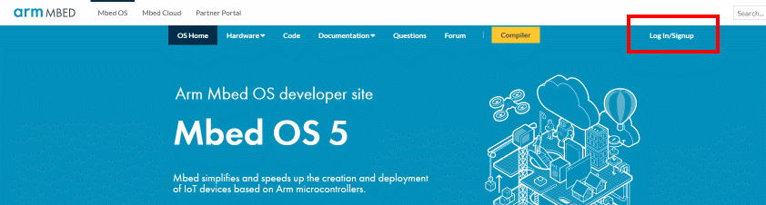
Log In/Sign upを選択
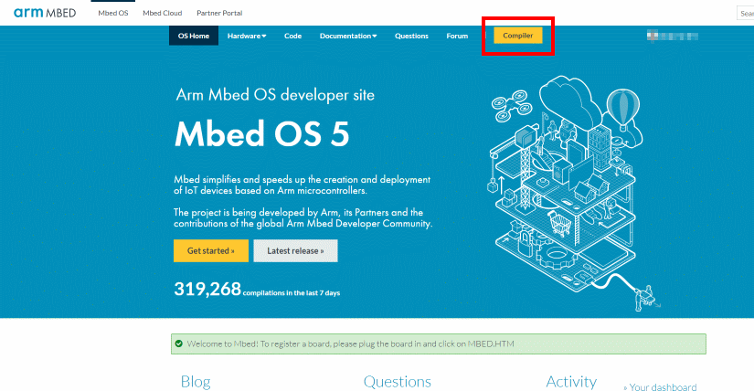
Sign upを選択
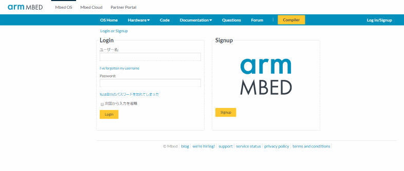
メールアドレス、ユーザ名、パスワード、名前、名字、国名を入力
以上で完了です。 完了後、メールが届いて最終確認後、Sing Inできます。
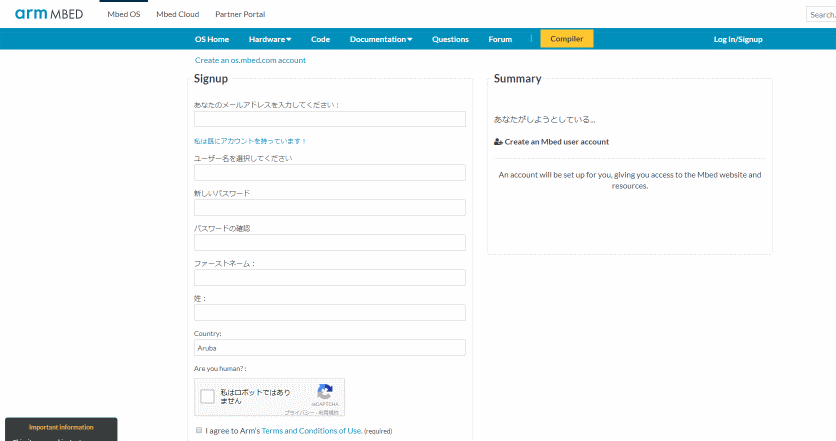
Compilerを押して作業開始!!
BLE Nanoを動かす下準備
mbedはブラウザ上で作業が完結する模様。 なので、ブラウザ上でソース編集、デバイスに書き込みという往復作業になります。 まず、先の画面でCompilerをクリックすると、下記のような画面に遷移します。
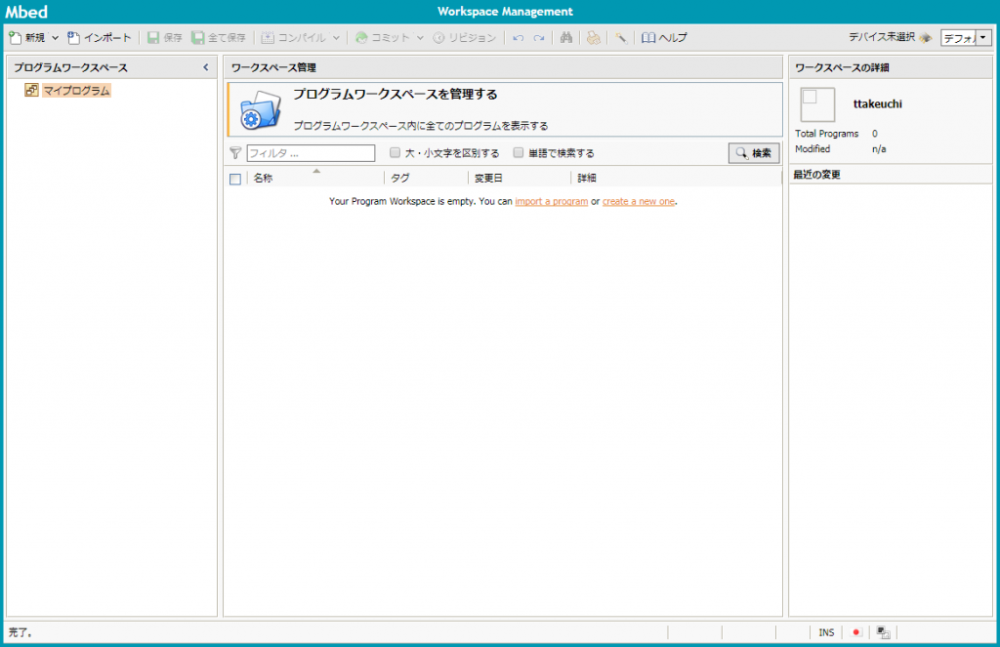
ここで、右上のデバイス未選択をクリック。
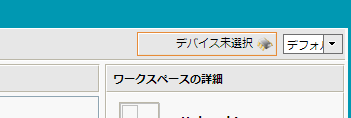
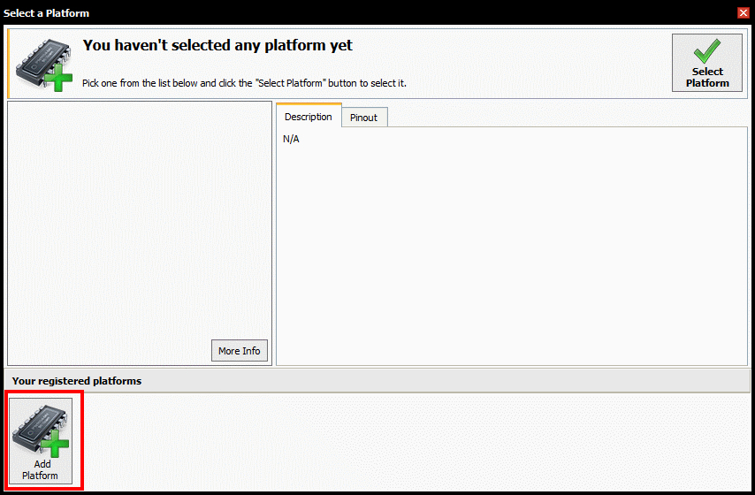
表示されるダイアログの左下のAdd Platformをクリック
別ウィンドウで開発ボードの一覧がリストアップされます。
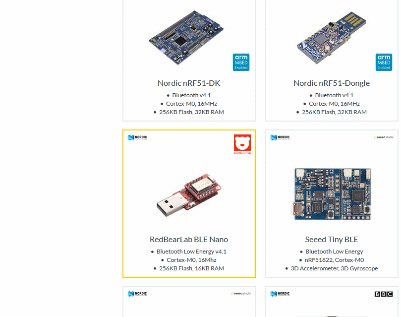
RedBearLab BLE Nanoを選択
続いて、BLE Nanoの詳細に移動しますので、画面右側中央のAdd to your Mbed Compilerをクリック
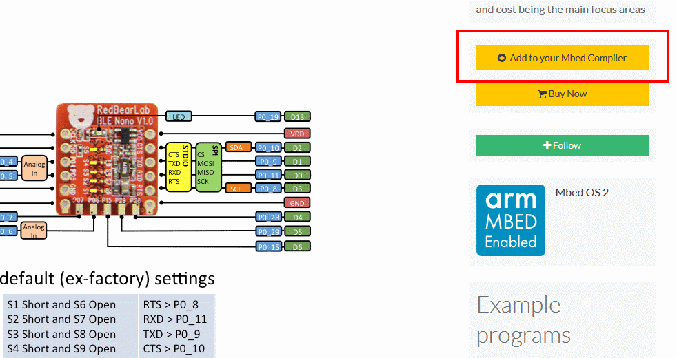 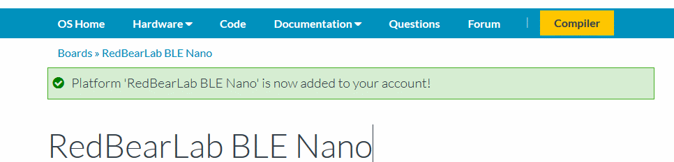
成功しました。
サンプルのインポート
次にサンプルソースをインポートします。 BLE_iBeaconというサンプルがありますので、これを自分の環境にインポートします。 画面左上のインポートをクリックします。
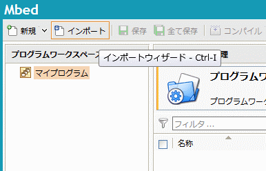
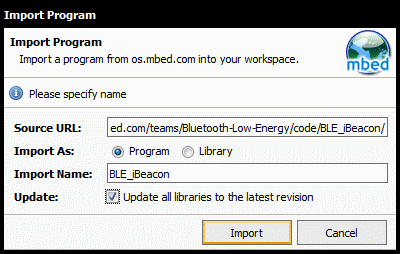
Source URLに先ほどのBLE_iBeaconのurlを入力し、Importを実行
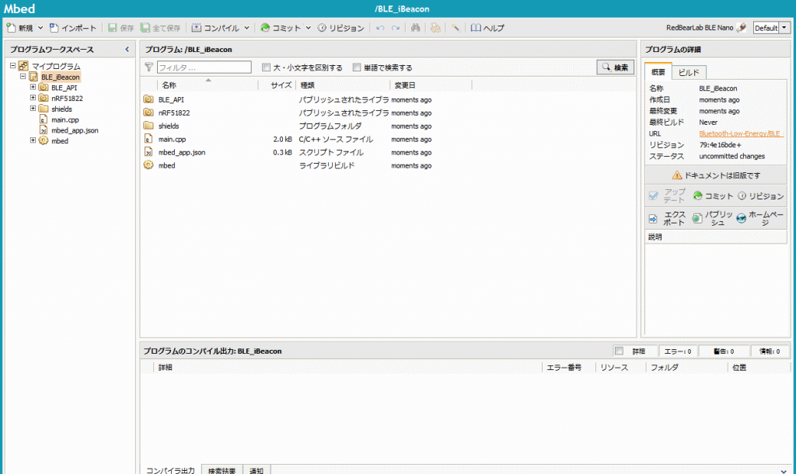
成功するとプロジェクト一式が画面に表示されます
おもむろに、main.cppを見てみます。 [code lang=”c++”] /* mbed Microcontroller Library * Copyright (c) 2006-2015 ARM Limited * * Licensed under the Apache License, Version 2.0 (the “License”); * you may not use this file except in compliance with the License. * You may obtain a copy of the License at * * http://www.apache.org/licenses/LICENSE-2.0 * * Unless required by applicable law or agreed to in writing, software * distributed under the License is distributed on an “AS IS” BASIS, * WITHOUT WARRANTIES OR CONDITIONS OF ANY KIND, either express or implied. * See the License for the specific language governing permissions and * limitations under the License. */
#include “mbed.h” #include “ble/services/iBeacon.h”
BLE ble;
void bleInitComplete(BLE::InitializationCompleteCallbackContext *params) { BLE &ble = params->ble; ble_error_t error = params->error;
if (error != BLE_ERROR_NONE) { return; }
/** * The Beacon payload has the following composition: * 128-Bit / 16byte UUID = E2 0A 39 F4 73 F5 4B C4 A1 2F 17 D1 AD 07 A9 61 * Major/Minor = 0x1122 / 0x3344 * Tx Power = 0xC8 = 200, 2’s compliment is 256-200 = (-56dB) * * Note: please remember to calibrate your beacons TX Power for more accurate results. */ const uint8_t uuid[] = {0xE2, 0x0A, 0x39, 0xF4, 0x73, 0xF5, 0x4B, 0xC4, 0xA1, 0x2F, 0x17, 0xD1, 0xAD, 0x07, 0xA9, 0x61}; uint16_t majorNumber = 1122; uint16_t minorNumber = 3344; uint16_t txPower = 0xC8; iBeacon *ibeacon = new iBeacon(ble, uuid, majorNumber, minorNumber, txPower);
ble.gap().setAdvertisingInterval(1000); /* 1000ms. */ ble.gap().startAdvertising(); }
int main(void) { ble.init(bleInitComplete);
/* SpinWait for initialization to complete. This is necessary because the * BLE object is used in the main loop below. */ while (!ble.hasInitialized()) { /* spin loop */ }
while (true) { ble.waitForEvent(); // allows or low power operation } } [/code] すごくシンプルです。 main関数内で、おまじないした後は、全ての処理がbleInitComplete関数内に書いてあります。 サンプルは1秒毎にアドバタイジングパケットを送信する模様。 とりあえず、これをコンパイルします。
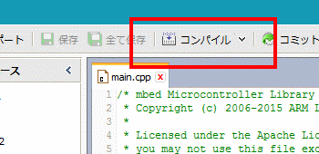
画面左上のコンパイルをクリック
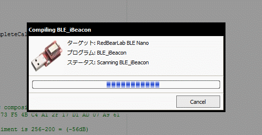
コンパイルが始まります
が、エラーと警告。
- Warning: #warning directive: toolchain.h has been replaced by mbed_toolchain.h, please update to mbed_toolchain.h [since mbed-os-5.3] in “extras/mbed_e7ca05fa8600/platform/toolchain.h”, Line: 23, Col: 3
- Error: Cannot open source input file “core_cmInstr.h”: No such file or directory in “BLE_API/ble/services/iBeacon.h”, Line: 19, Col: 27
とりあえず警告は無視して、エラーを直します。エラー行右の**Fix it!**をクリック。 なんとライブラリを探してきて、候補を提示してくれます。 ただ、どれを選べば良いのか見当もつきません。 ということで調べてみると、

{kind=link}
{kind=link}
{kind=link}
{kind=link}
{kind=link}
{kind=link}
{kind=link}
{kind=link}
{kind=link}
{kind=link}
{kind=link}
{kind=link}
{kind=link}
{kind=link}
{kind=link}
{kind=link}
という記事が。 記事によれば、
ですがこのビルドを指定すると下記のようなエラーになってしまったので、 4eea097334d6 で実行しています。
とのこと。どうもインポート時に最新ビルドを持ってくるようにしたのが不味かった模様。 なので、プロジェクトを削除してもう一度インポートします。
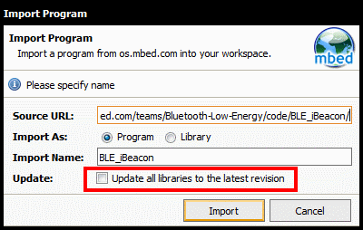
Update all libraries to the latest revisionのチェックを外します。
{kind=link}
警告は出ますが、コンパイルに成功し、バイナリをダウンロードできるようになりました。
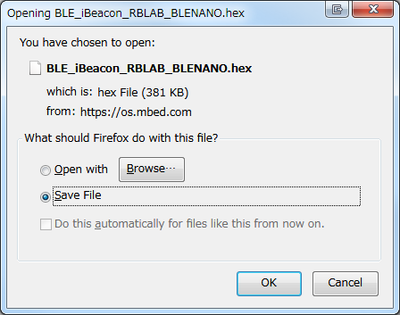
{kind=link}
まずはコンパイルとバイナリ生成が完了。